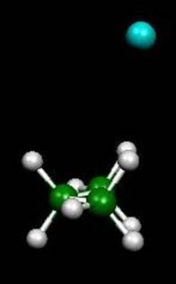

Karen I. Peterson
Lecturer
Physical Chemistry
Office:
CSL 309
Office Phone: 619-594-4507
e-mail:
kpeterso@chemistry.sdsu.edu
Home page
|
|
Our recent focus is on the study of
alkane interactions by means of high-resolution rotational spectroscopy.
The underlying motivation of this work is to
determine accurate intermolecular potentials, which are required in theoretical
simulations of biochemical systems. Generally,
these potentials are checked by simulating known macroscopic properties (such
as vapor pressure), but experimental information from simpler, bimolecular
systems can provide a more immediate test of the potential.
In the initial work of this program, we are
analyzing the structure of Ar-propane and Ne-propane complexes using the
pulsed-jet Fourier transform microwave spectrometer at Wesleyan University; we
have measured rotational transitions for both complexes.
In conjunction with the experimental work, we
are doing ab initio calculations to
better understand the barriers to internal motions within the complexes.
Furthermore, we expect to learn about the limitations and requirements of the theory.
Although an experimental structure of the propane-propane
complex would be very useful, it is likely that it does not have a dipole
moment, so rotational transitions cannot be observed.
Therefore, we are now planning to measure the
microwave spectra of propane-methane and propane-ethane complexes.
|
Vibrationally
averaged structure of Ar-propane
|
 |
Selected Publications
- "Investigating intermolecular interactions via scanning tunneling microscopy - An experiment for the physical chemistry laboratory,"
Pullman D, Peterson KI,
JOURNAL OF CHEMICAL EDUCATION 81 549-552 (2004)
[ Chem & Biochem Home
| Undergraduate
| Graduate
| Research
]
SDSU Chemistry & Biochemistry Graduate Admissions
Web minion: A.L. Cooksy.
Last modified: March 16 2006 23:01:43.